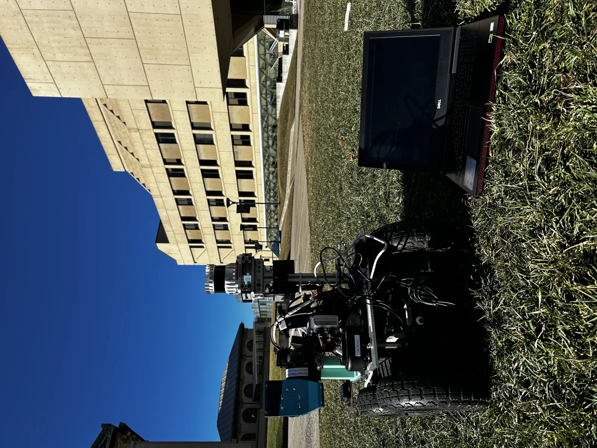
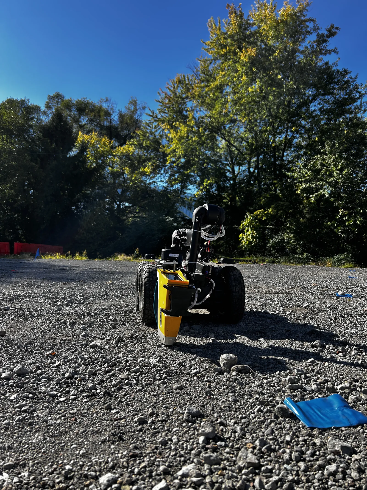
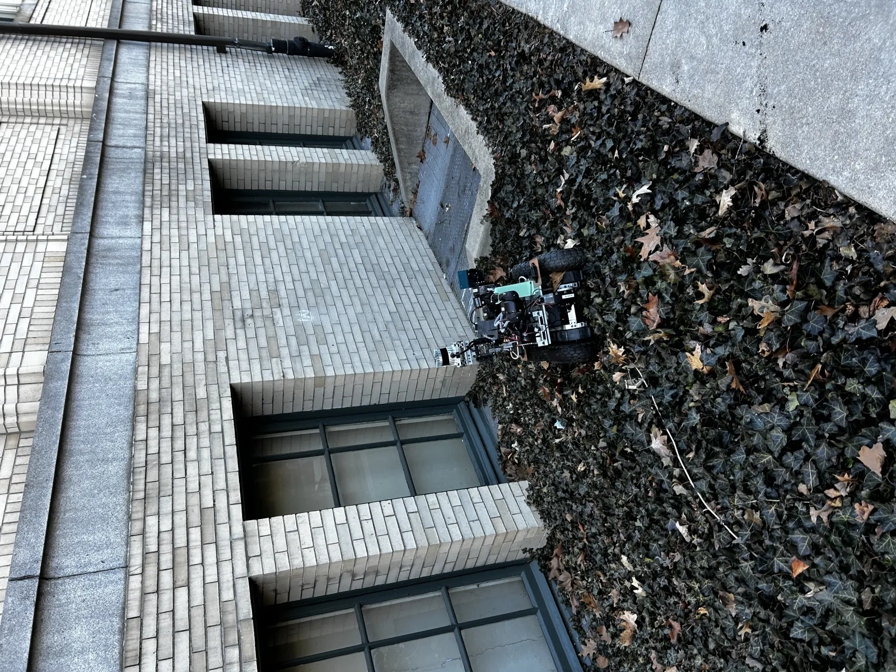
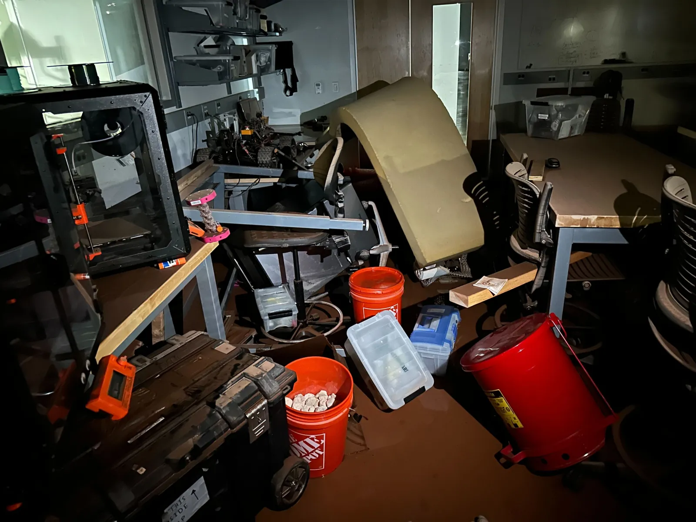
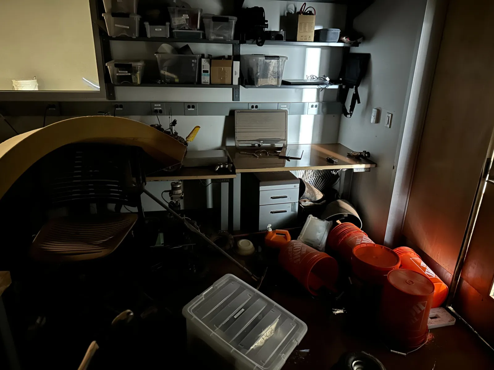

Adaptive sampling for environmental monitoring
Overview
Patrick is a wheeled robot composed of rover platform from Rover Robotics, arm from HEBI, and a p-xrf sensor. It is currently being used to test adaptive path planning algorithms for a soil sampling project.


Adaptive Density Drive (ADD)
ADD is an efficient driving system that adaptively adjusts its speed based on the density of the point cloud around it to efficiently navigate through dense environments.
Autonomous Vegtation Navigation
Most of our environmental monitoring efforts were performed in flat areas. However, in most exploration missions, robots will need to navigate through unstructured environments.
We are currently working on an autonomous vegetation navigation system that will allow Patrick to navigate through unstructured environments through fusion of 2D and 3D perception and proprioceptive sensors.




The Flood
March 6th. 2025. There was a flood in our lab building due to a leaking pipe. Our whole lab was flooded with sewage water. Most of our equipment and robots, including Patrick, were destroyed.
Now we are working with Simon to continue Patrick's mission.
Silly Walks 2024
Won Sillywalks 2024 with "The Handstand". RML tradition where new team members use one of lab robots and demonstrate their best "silly walk".